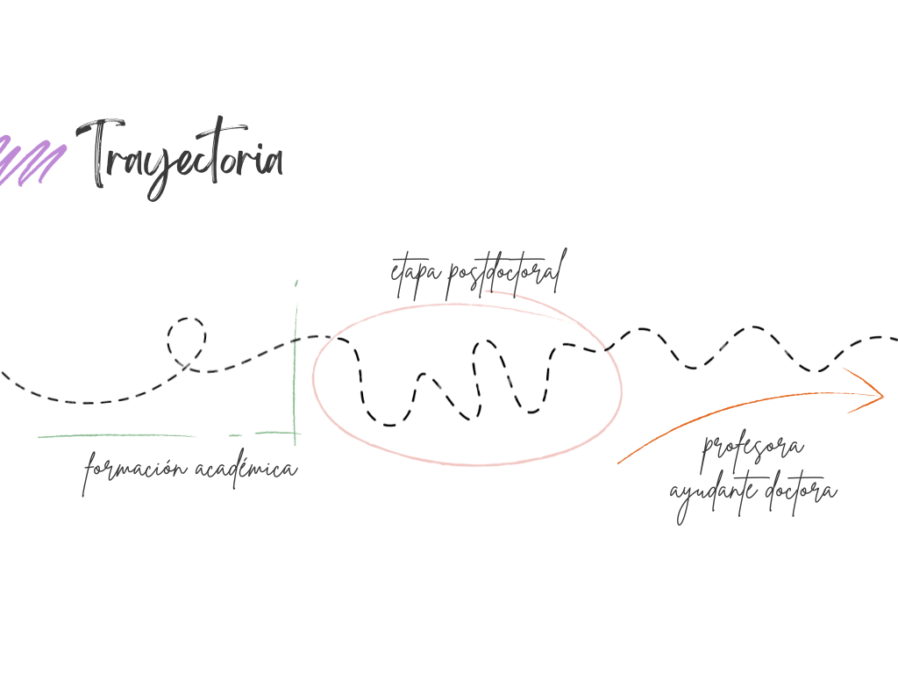

Parte 0 · empezar
punto de partida
– DESDE DÓNDE ESCRIBO ESTE PORTAFOLIO

Una trayectoria docente larga, pero constantemente abierta a revisión
Una nota para el lector
Este portafolio se organiza desde una lógica presente también en mi trabajo sobre desarrollo cognitivo y lingüístico: leer los procesos antes de buscar cambios visibles. No como una metáfora, sino como una forma de interpretar también los procesos de desarrollo profesional docente.
INICIOS
Mucho antes de participar en programas de formación docente, ya me interesaba una misma pregunta: qué hace posible que algo cambie cuando aprendemos. Con el tiempo, esa pregunta me ha llevado a prestar más atención a los procesos que a los resultados inmediatos. No todo aprendizaje se hace visible de forma rápida, ni todo cambio aparece cuando se espera. Esta manera de mirar, construida entre la investigación y la docencia, sigue orientando cómo interpreto hoy la enseñanza, la mejora y el desarrollo profesional.
APRENDIZAJES
Durante años entendí la mejora docente principalmente como una cuestión de diseño: ajustar actividades, afinar metodologías y construir mejores sistemas de evaluación. Revisar experiencias pasadas me ha permitido reconocer tanto el valor como los límites de esa mirada. No siempre existe una relación directa entre lo que se planifica y lo que finalmente ocurre en el aula. Parte de las preguntas que hoy orientan mi trabajo nacen precisamente de ese espacio de incertidumbre entre las decisiones docentes y los procesos reales de aprendizaje.
REFLEXIONES
Con el tiempo he ido comprobando que algunas de las cuestiones más importantes de la práctica docente no desaparecen con más experiencia, más formación o mejores herramientas. Algunas reaparecen una y otra vez bajo formas distintas: cómo favorecer reflexiones genuinas, cómo acompañar procesos complejos o cómo interpretar avances que no siempre son visibles. Más que señalar problemas pendientes, estas preguntas han ido desplazando mi atención hacia aquello que resulta difícil de medir, anticipar o cerrar, pero que sigue siendo central para comprender lo que ocurre cuando enseñamos y aprendemos.
REDES
El valor principal de esta experiencia no ha estado en incorporar nuevas herramientas, sino en cambiar la forma de acercarme a los procesos de cambio. El contraste continuado con otras personas, la conversación sostenida y la posibilidad de volver sobre una misma situación desde distintas perspectivas han desplazado el foco desde la búsqueda de soluciones hacia una comprensión más cuidada de lo que está ocurriendo. Acompañar deja de ser intervenir rápidamente para convertirse, en primer lugar, en aprender a leer mejor los procesos que tenemos delante.
Pregunta que abre el portafolio